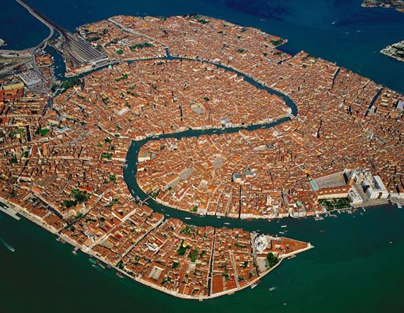
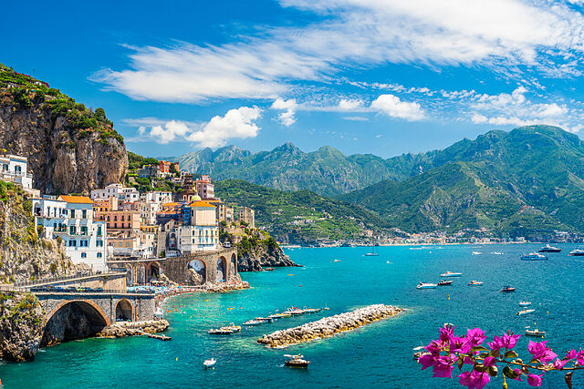
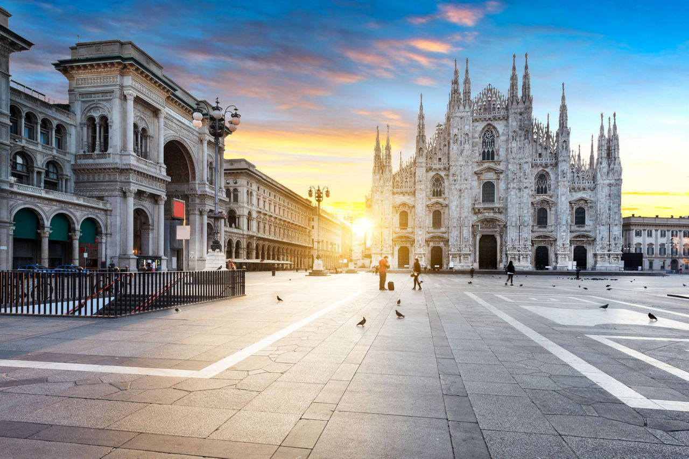
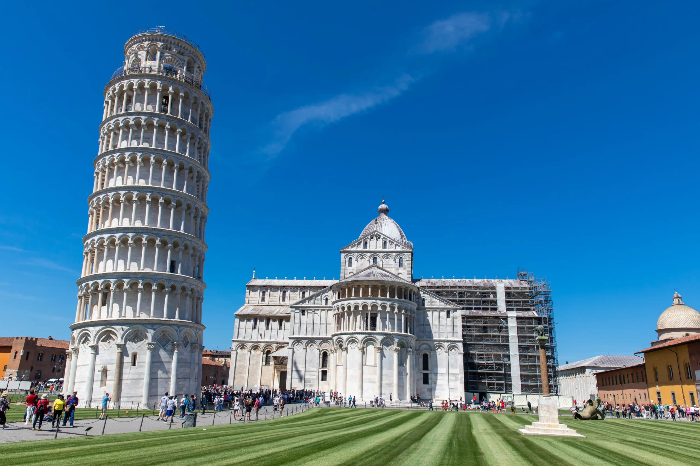
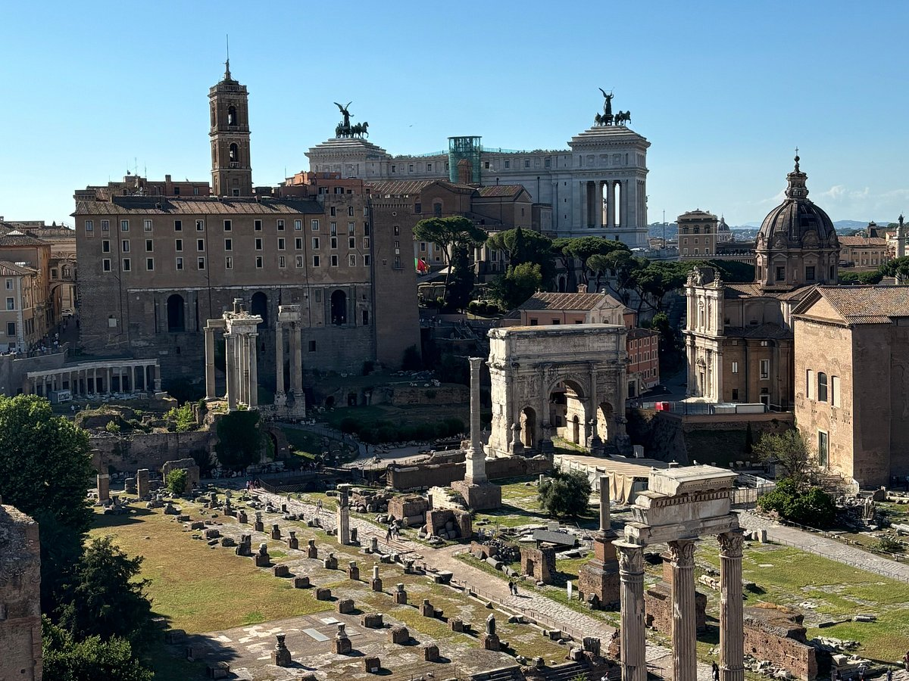
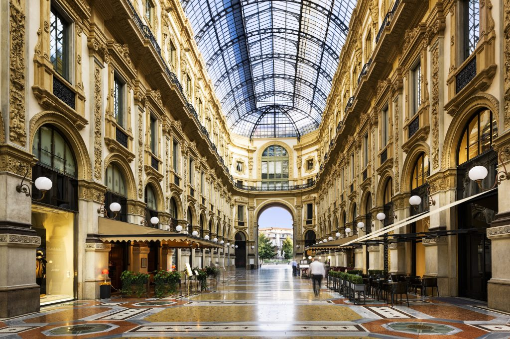

Descripcion del pais
Italia, oficialmente la República Italiana, es un país situado en el sur de Europa, conocido por su rica historia, cultura y gastronomía. Roma, la capital, es famosa por sus monumentos antiguos como el Coliseo y el Vaticano. Italia es cuna del Renacimiento y ha influido profundamente en la cultura europea a través de figuras como Leonardo da Vinci, Miguel Ángel y Dante Alighieri. Con una economía diversificada, es uno de los principales productores de vino y moda. Italia es famosa por sus paisajes variados, desde los Alpes en el norte hasta las costas mediterráneas en el sur. Su idioma oficial es el italiano, y la cocina italiana es apreciada mundialmente por platos como la pasta, la pizza y el gelato.
5 lugares para ir de vacaciones
1. Roma

Roma, la capital de Italia, es una ciudad llena de historia y cultura. Conocida como la "Ciudad Eterna", Roma alberga monumentos icónicos como el Coliseo, el Foro Romano y el Panteón. El Vaticano, sede de la Iglesia Católica, es un estado independiente dentro de Roma y alberga la Basílica de San Pedro y la Capilla Sixtina con los frescos de Miguel Ángel. Además, los visitantes pueden disfrutar de la Fontana di Trevi, la Plaza de España y el encanto de los barrios antiguos como Trastevere.
2. Venecia
Venecia, famosa por sus canales y arquitectura única, es un destino imperdible en Italia. Los turistas pueden explorar la ciudad en góndola a través del Gran Canal y visitar la Plaza de San Marcos, que alberga la Basílica de San Marcos y el Palacio Ducal. Venecia también es conocida por sus puentes históricos, como el Puente de Rialto y el Puente de los Suspiros. Durante el Carnaval de Venecia, la ciudad se llena de coloridos disfraces y máscaras, ofreciendo una experiencia cultural única.
3. Florencia

Florencia es la cuna del Renacimiento y un tesoro de arte y arquitectura. El Duomo, con su impresionante cúpula diseñada por Brunelleschi, es uno de los símbolos de la ciudad. La Galería de los Uffizi y la Galería de la Academia albergan obras maestras de artistas como Botticelli, Leonardo da Vinci y Miguel Ángel, incluyendo la famosa estatua del David. Además, los visitantes pueden pasear por el Puente Vecchio, conocido por sus joyerías, y disfrutar de las vistas panorámicas desde la Piazzale Michelangelo.
4. Costa Amalfitana
La Costa Amalfitana es conocida por sus impresionantes paisajes costeros y pintorescos pueblos. Amalfi, Positano y Ravello son algunos de los destinos más populares, con sus coloridas casas encaramadas en acantilados y vistas al mar Mediterráneo. Los visitantes pueden disfrutar de playas, rutas de senderismo como el Sendero de los Dioses y degustar la deliciosa cocina local. La región también es famosa por su producción de limoncello, un licor de limón.
5. Milán
Milán es la capital de la moda y el diseño de Italia. La ciudad alberga la impresionante Catedral de Milán, una de las catedrales góticas más grandes del mundo. La Última Cena de Leonardo da Vinci se puede ver en el convento de Santa Maria delle Grazie. Milán también es conocida por sus elegantes boutiques y tiendas de moda en la Galleria Vittorio Emanuele II y la Via Montenapoleone. Además, la ciudad tiene una vibrante vida cultural con teatros como La Scala y numerosos museos.
Datos curiosos
1. La torre Inclinada de Pisa
La Torre de Pisa, famosa por su inclinación, comenzó a inclinarse durante su construcción en el siglo XII debido a un suelo inestable. A pesar de numerosos esfuerzos para corregir su inclinación, la torre se ha convertido en un símbolo icónico de Italia. La inclinación de la torre es de aproximadamente 4 grados, y en 2001 se completaron trabajos de restauración para estabilizarla y asegurar que no se incline más.
2. Más Patrimonio de la Humanidad
Italia tiene más sitios del Patrimonio Mundial de la UNESCO que cualquier otro país del mundo. Con 58 sitios inscritos, Italia es un destino privilegiado para los amantes de la historia, la cultura y la arquitectura. Entre los sitios destacados se encuentran el Centro Histórico de Roma, los frescos de Padua, las ciudades de arte del Renacimiento y el Valle de los Templos en Sicilia.
3. Capital de la moda
Milán es considerada una de las capitales mundiales de la moda, junto con París, Nueva York y Londres. La Semana de la Moda de Milán es uno de los eventos más importantes del año en la industria de la moda, atrayendo a diseñadores, modelos y celebridades de todo el mundo. La ciudad es sede de prestigiosas marcas de moda como Gucci, Prada y Armani, y cuenta con un vibrante sector de diseño y estilo.
Quiz
¡Prueba tus conocimientos con este Quiz!
Gracias por participar
Tu puntaje fue: